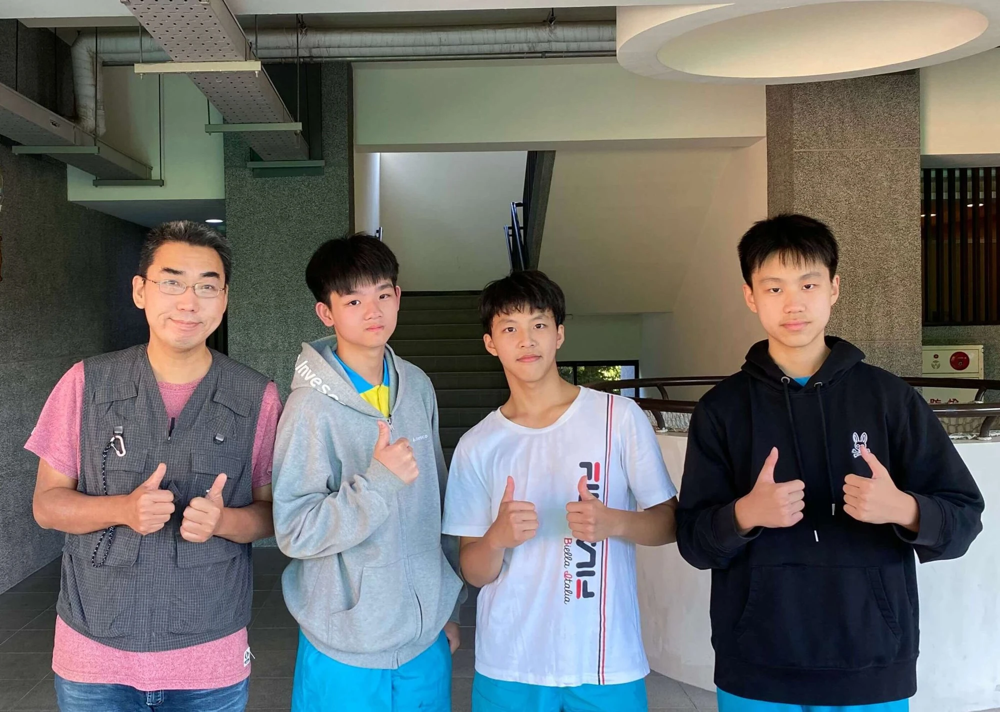
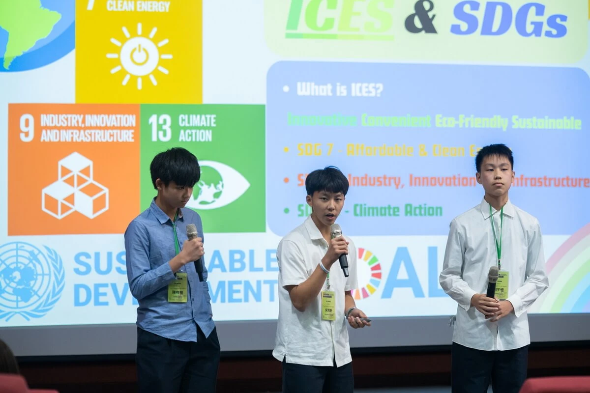
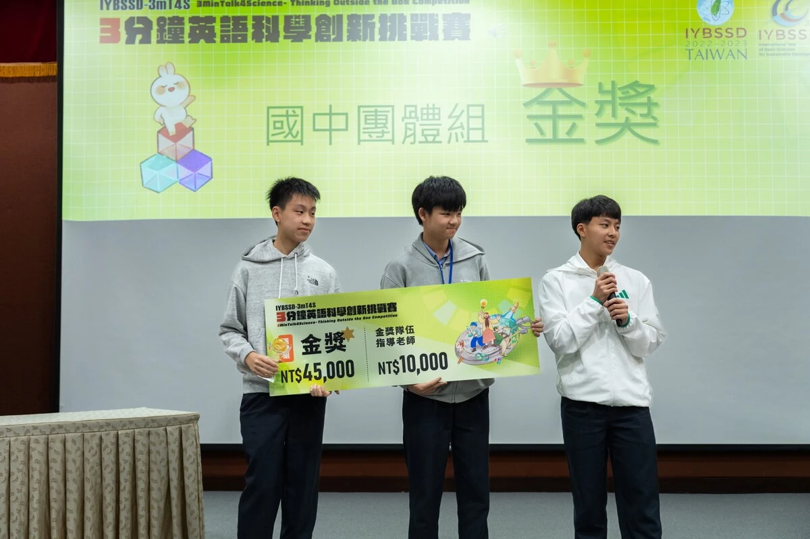
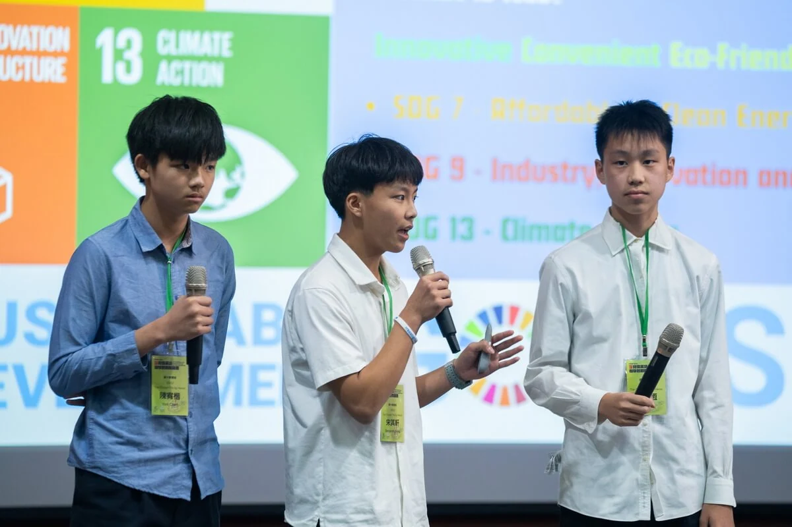
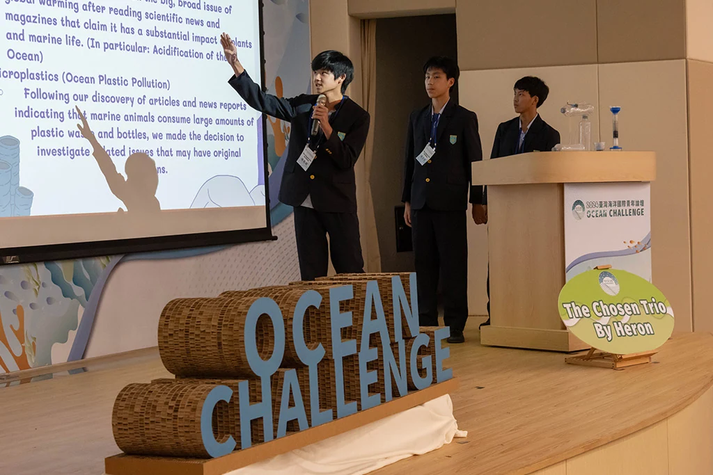
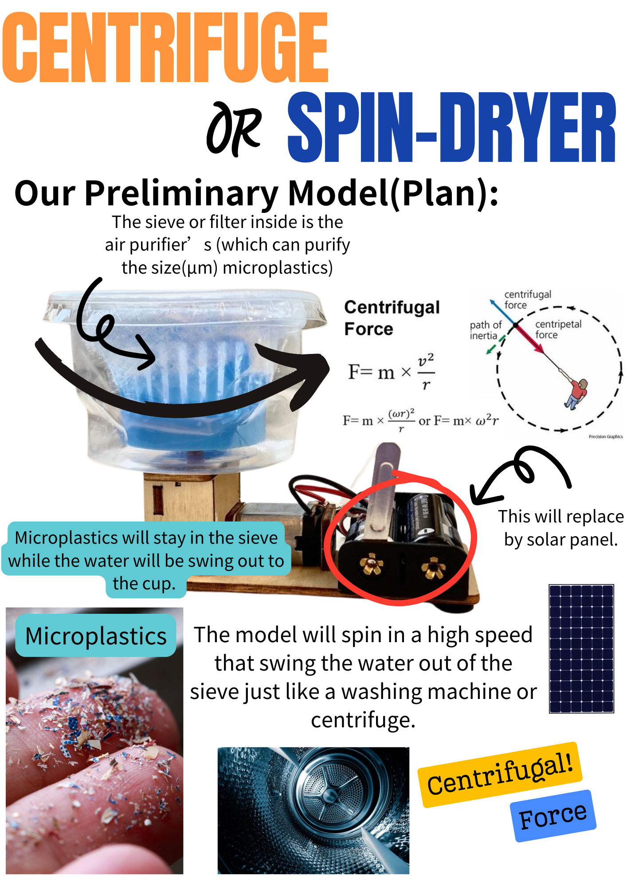
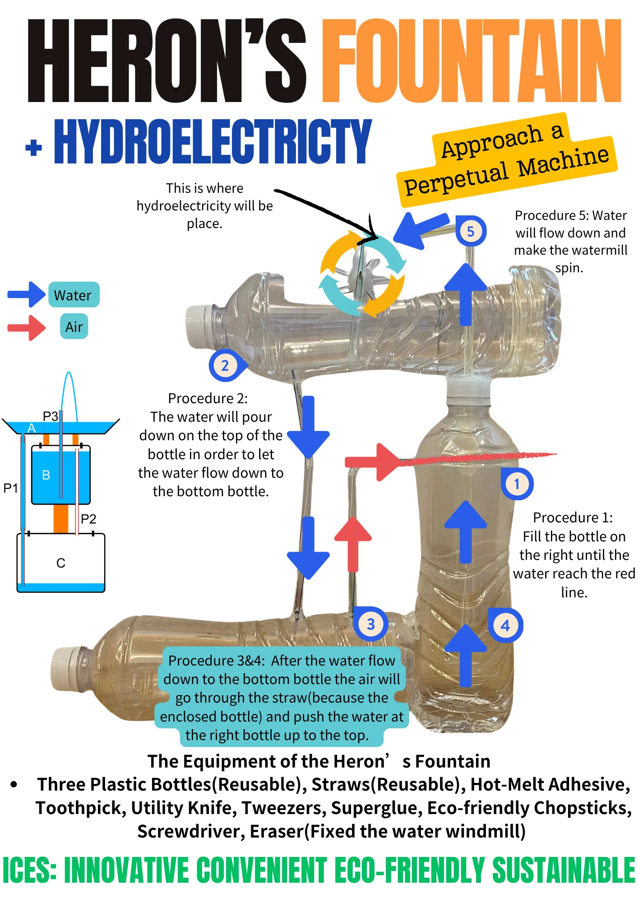
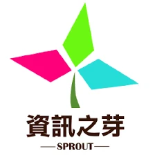
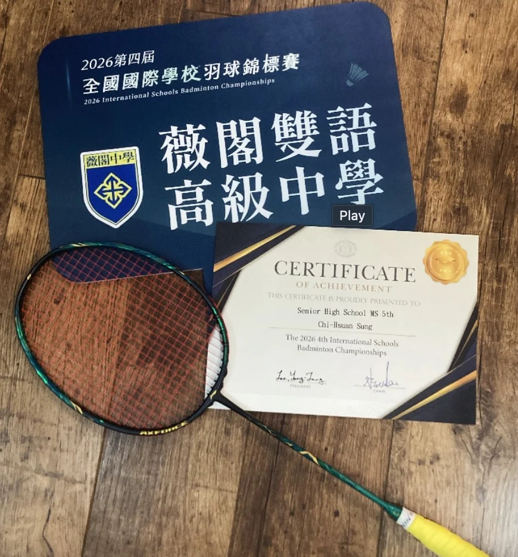

Activities / Applied curiosity
Small prototypes.
Lasting questions.
SDG projects, algorithm training, and badminton leadership are different ways I practice working through difficulty—with other people and through repetition.
People behind the prototypes
Ideas need a team.


01 SDG engineering / Team captain
Demonstrate a principle.
Then make it useful.
I led projects including a Heron’s Fountain physics demonstration, the Ocean Challenge, a centrifugal-concept microplastic separation system, and an AI Fridge using computer vision.
Leaks, failed trials, and redesign were part of the process. The work helped me move from demonstrating scientific principles toward applying them to environmental problems.




Heron’s Fountain
A physics demonstration involving fluid pressure—not a hydroelectric generator. Failed trials and leaks led to rebuilding.
Ocean Challenge
An early environmental engineering project, recognized as a 2024 Ocean Challenge finalist.
Microplastic separation
A prototype using centrifugal concepts to explore separation, with testing and redesign central to the work.
AI Fridge
A computer-vision project connecting recognition with a practical SDG-focused application.
02 Algorithm training
資訊之芽
SPROUT Program.

SPROUT / Algorithm trainingI participated in advanced C++ and algorithm training, with an emphasis on data structures and computational problem solving.
That analytical foundation supports my engineering work—from decomposing software tasks to debugging systems.
View academic recognition ↗03 Badminton / Leadership
A different kind
of repetition.
I have played badminton for 7–8 years and served as club president and captain. I helped organize practice and support the team while continuing to compete in singles.
- 2025 & 2026
- School men’s singles champion
- 2026
- International Schools Badminton Championships · 5th place, men’s singles

04 Explore the engineering work
Marine field learning
Taiwan Global Pathfinders · NMMBA · HIMB. The completed program now has its own field-experience page.
Environment ↗AI fish detection
Lab learning, independent dataset development, deployment failures, refinement, and evaluation.
AI / Research ↗Physical systems
Independent AMR development and team-built VEX robots: programming, functional troubleshooting, and testing.
Robotics ↗